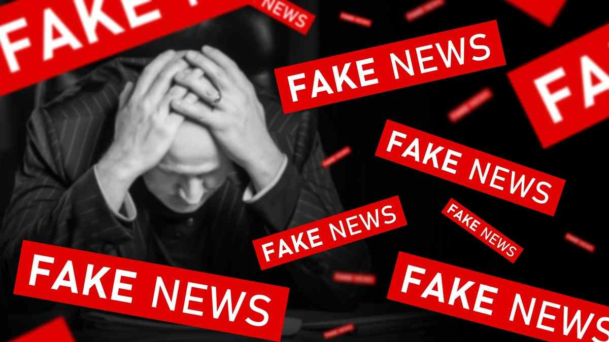

Na internete nájdeme množstvo informácií, no nie všetky sú pravdivé alebo dôveryhodné. Niektoré stránky môžu šíriť nepresné alebo zámerne zavádzajúce správy.
Dôveryhodnosť informácií závisí od zdroja, ktorý ich poskytuje. Spoľahlivé zdroje majú overené fakty, jasnú identitu a odborníkov, ktorí informácie kontrolujú.
Ako rozpoznať pravdivé informácie?
Pamätaj, že každý môže niečo napísať na internet, preto je dôležité byť kritický a nenechať sa ľahko oklamať.
